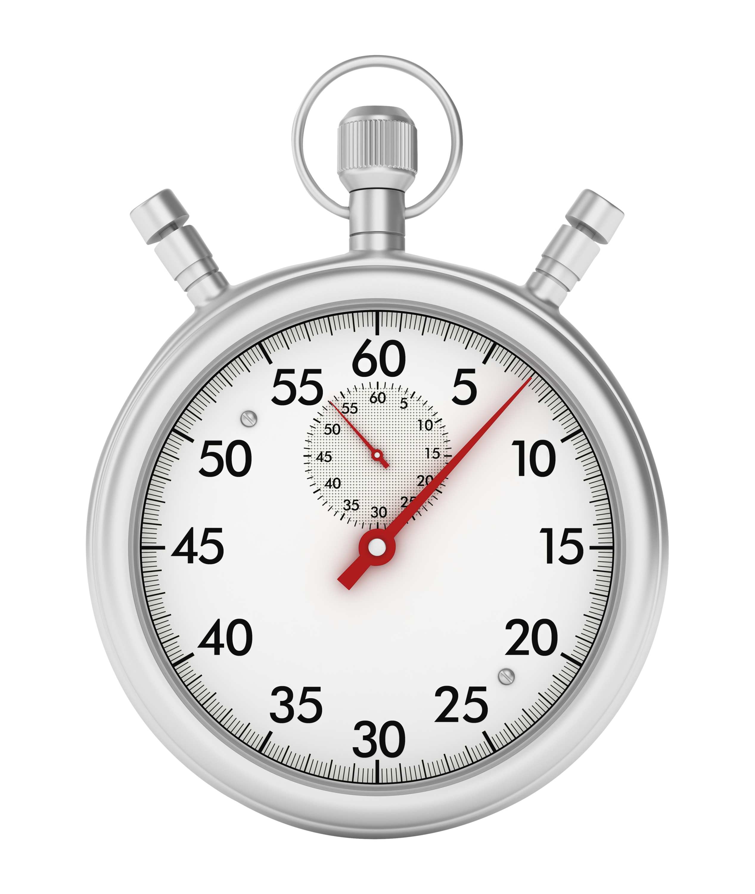
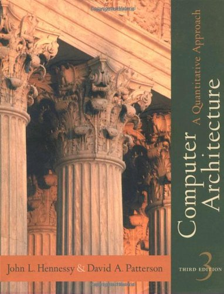
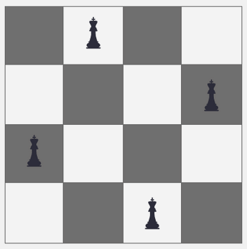
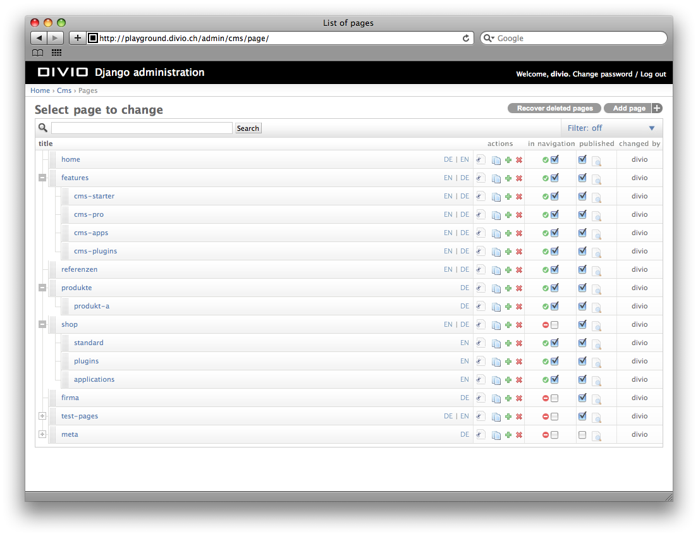
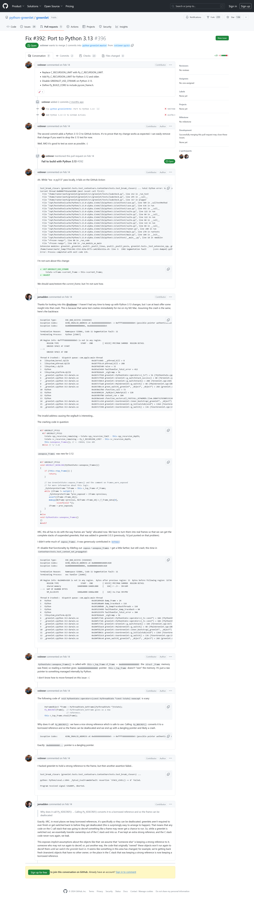
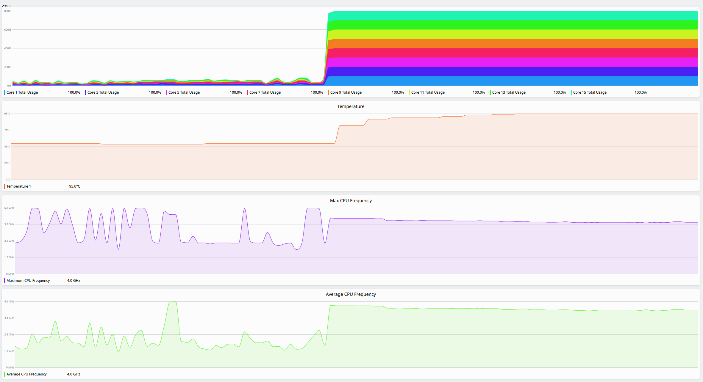

Measuring the
Performance of
CPython
Michael Droettboom
Microsoft
PyCon, May 18, 2024
How do I make my
Python code
faster?
import numba
@numba.jit(nopython=True)
def mandel(x, y, max_iters):
i = 0
c = complex(x,y)
z = 0.0j
for i in range(max_iters):
z = z * z + c
if (z.real * z.real + z.imag * z.imag) >= 4:
return i
return 255
This is not that talk.
How do I make all
Python code
faster?
This is not that talk.
How do I know I am making all
Python code
faster?
This is that talk.
|  |
|
Part I:
Measurement targets
Why don't we just...
measure the time spent in all
Python programs?

|
“I am not suggesting that instrumentation be added by the Go
compiler to all Go programs in the world: that’s clearly
inappropriate.” — Russ Cox
|
Too many uncontrolled variables
Benchmarking
pyperformance suite
2to3 aiohttp async_generators async_tree_cpu_io_mixed
async_tree_cpu_io_mixed_tg async_tree_io async_tree_io_tg
async_tree_memoization async_tree_memoization_tg async_tree_none
async_tree_none_tg asyncio_tcp asyncio_tcp_ssl asyncio_websockets
bench_mp_pool bench_thread_pool chameleon chaos comprehensions
coroutines coverage create_gc_cycles crypto_pyaes dask deepcopy
deepcopy_memo deepcopy_reduce deltablue django_template djangocms
docutils dulwich_log fannkuch flaskblogging float gc_traversal
generators genshi_text genshi_xml go gunicorn hexiom html5lib json
json_dumps json_loads logging_format logging_silent logging_simple
mako mdp meteor_contest mypy2 nbody nqueens pathlib pickle
pickle_dict pickle_list pickle_pure_python pidigits pprint_pformat
pprint_safe_repr pycparser pyflate pylint python_startup
python_startup_no_site raytrace regex_compile regex_dna
regex_effbot regex_v8 richards richards_super scimark_fft
scimark_lu scimark_monte_carlo scimark_sor scimark_sparse_mat_mult
spectral_norm sqlalchemy_declarative sqlalchemy_imperative
sqlglot_normalize sqlglot_optimize sqlglot_parse sqlglot_transpile
sqlite_synth sympy_expand sympy_integrate sympy_str sympy_sum
telco thrift tomli_loads tornado_http typing_runtime_protocols
unpack_sequence unpickle unpickle_list unpickle_pure_python
xml_etree_generate xml_etree_iterparse xml_etree_parse
xml_etree_process
Benchmark ontology
|  |
|
nqueens

richards
"""
based on a Java version:
Based on original version written in BCPL by Dr Martin Richards
in 1981 at Cambridge University Computer Laboratory, England
and a C++ version derived from a Smalltalk version written by
L Peter Deutsch.
Java version: Copyright (C) 1995 Sun Microsystems, Inc.
Translation from C++, Mario Wolczko
Outer loop added by Alex Jacoby
"""
richards
A Benchmark Test for Systems Implementation Languages
-----------------------------------------------------
This distribution is currently being put together and will be in a
more polished state in due course.
It was designed in 1980 to test the efficiency of implementations of
programming languages.
Please feel free to re-implement this benchmark in any language you
choose. I would be happy to incorporate such translations into this
distribution together with their timing/size results.
Martin Richards
23 February 2007
“In my opinion, benchmark suites should only contain [application benchmarks].”
— Nicolas Nethercote (A browser benchmarking manifesto)
“Striving for even higher benchmark scores on Octane translated into increasingly-marginal improvements in the performance of real web pages.”
— V8 Team (Retiring Octane)
“You don't have time to inspect the source code of real applications to check that different implementations are kind-of comparable.
You do have time to inspect 100-line programs. You do have time to write 100-line programs. You still might have something to learn from how other people write 100-line programs.”
— Issac Gouy (Debian Benchmarks Game)
comprehensions
widgets = [w for w in widgets if not self._is_big_spinny(w)]
id_to_widget = {w.widget_id: w for w in widgets}
id_to_derived = {
w.widget_id: [id_to_widget.get(dwid) for dwid in w.derived_widget_ids]
for w in widgets
}
gc (garbage collector)
- Deliberately creates reference cycles between many objects
- Measures how long it takes to collect them
djangocms
|  | For an example site, how long does it take to serve a webpage? |
pylint
- Load a large Python file into memory
- Lint it
docutils
Convert a large reStructuredText file to HTML.(An important subcomponent of generating Sphinx documentation).
sqlalchemy
|  | PR: Port to Python 3.13 |
All benchmarks are useful, just in different ways.
| Application | Toy / Micro |
| By how much did things get faster? | Why did things get faster? |
| Harder to inspect and maintain. | Easier to inspect and maintain. |
Call to action:
If you care about a particular workload going faster, please donate some benchmarks
(Make a PR to pyperformance)
Part II:
Building a better stopwatch
A/A testing
- Average noise: ± 1.0%
- Most performance improvements are < 1.0%
“Other things” happening on the system
- Multi-tasking by the OS
- CPU core isolation
- CPU core pinning
- Virtual machines
- Typical cloud-computing environments introduce too much noise
Thermal management
Memory layout
- Each run of CPython has a unique memory layout
- Address space layout randomization (ASLR)
- Each build of CPython has a unique structure
- Profile-guided optimization (PGO)
The benchmarks themselves
pyperf: The better stopwatch
- Encapsulates all of the ways to run more consistent benchmarks
Using statistics to account for noise
- Hierarchical performance testing (HPT)
- Used in SPEC benchmarking suite.
- Only include results in the overall average when they are X% more likely to be different than the the null hypothesis.
- “The system measured by the benchmarks is 90% likely to be 1% faster.”
Part III:
Sharing the stopwatch
Continuous benchmarking
- Everyone uses the same bare-metal machines
- Built with Github Actions and self-hosted runners
CB vs. CI
| Continuous integration | Continuous benchmarking | |
| Setup | Mature | DIY |
| Cost | Free 2000 minutes for OSS, $0.008/min | Own machines or “call your sales rep” |
| Security | Safe to run arbitrary PRs | Must only run trusted PRs |